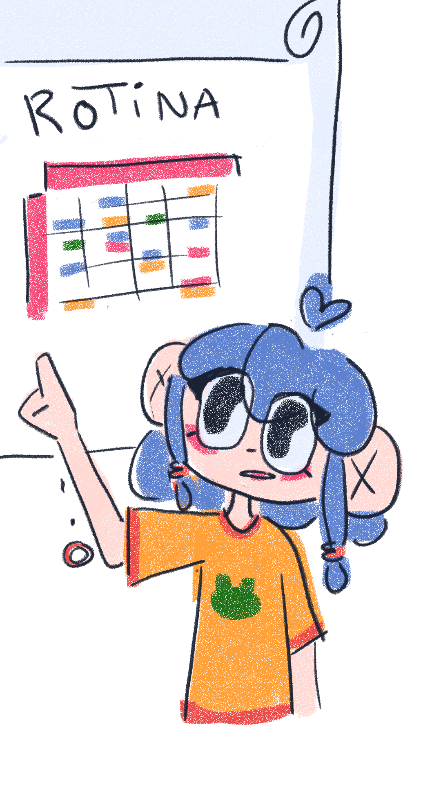
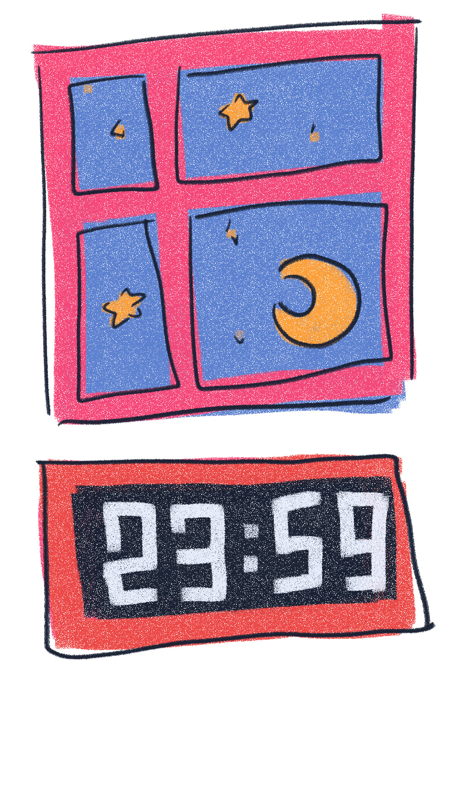
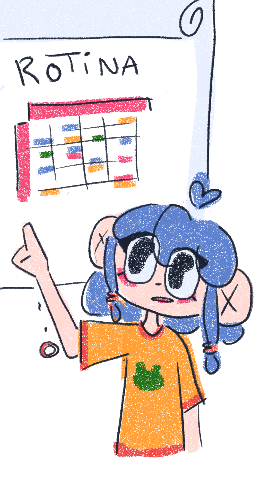
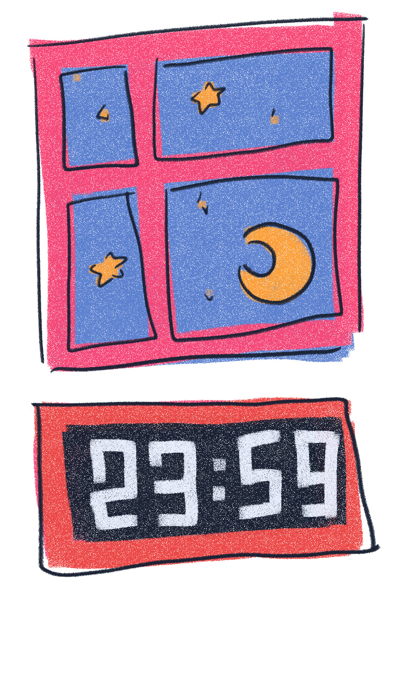

I really enjoy doing illustrations.
I worked mostly on my
Original Character - Sasha Bolacha
I really enjoy doing illustrations. I worked mostly on my Original Character - Sasha Bolacha
For me, it is always more
interesting when something
has illustrations, so i always
try to implement that in my
multimedia projects
For me, it is always more interesting when something has illustrations, so i always try to implement that in my multimedia projects

 


